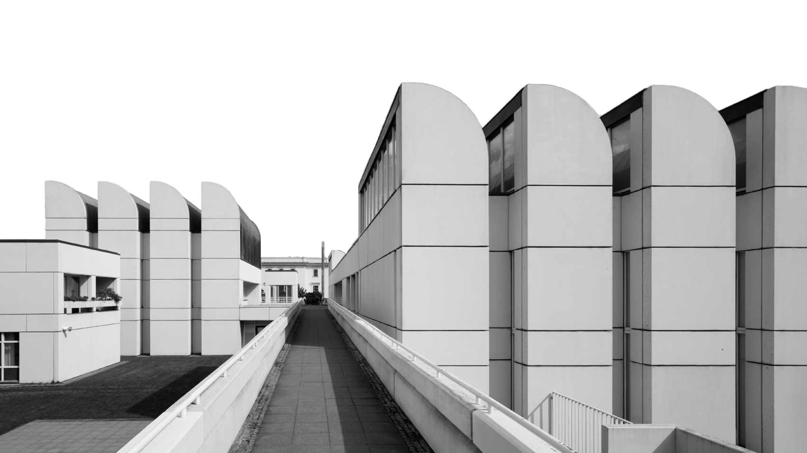
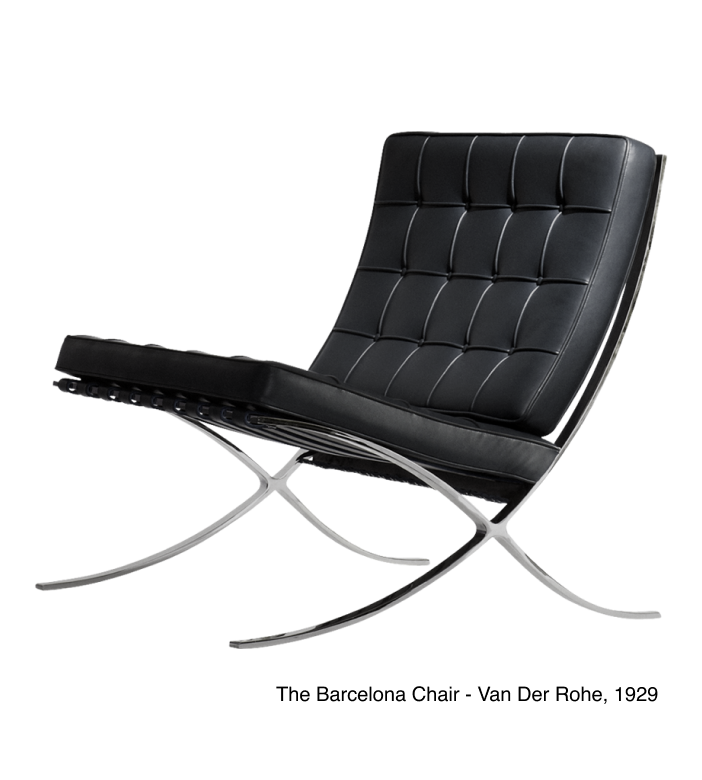

La storia
Tra il 1919 e il 1933, una scuola fondata a Weimar opera conciliazione tra arti ed artigianato in un nuovo linguaggio legato alla produzione industriale, impostando nuovi canoni estetici per l’architettura e il design moderni.
Identificato con l'andare degli anni come uno stile, il Bauhaus è stato in realtà una scuola, attiva in Germania tra il 1919 e il 1933.
Nasce infatti nel 1919, a Weimar, dall'unione della locale. Accademia di Belle Arti con la Scuola di Arti Applicate, che l'architetto Henri van de Velde aveva fondato nel 1906.
 Nel 1926 il Bauhaus viene trasferito a Dessau, in un nuovo edificio progettato dallo stesso Gropius. L'edificio ha ricoperto un'importanza fondamentale per lo sviluppo dell'architettura razionalista, cioè di una concezione del costruire basata su criteri essenziali, privi di aspetti decorativi, attenti principalmente alla funzione.
L'edificio si sviluppa in tre volumi asimmetrici, differenziati in base alla funzioni da ospitare (alloggi, aule, laboratori) e collegati da corpi di fabbrica nei quali si trovano i servizi comuni e gli uffici.
I migliori tra gli studenti del Bauhaus dei primi anni divennero in seguito professori: Marcel Breuer, divenne direttore della sezione mobili, dove si disegnavano pezzi d'arredo per la produzione industriale, che progettò la poltroncina Vasilij (in onore di Kandinskij).